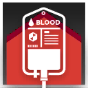

|
|
增效治疗丨Advanced Therapy 施展法术
消耗 1 技力
 立即
立即 |
医疗-医师：你擅长在战场上为干员提供治疗和增益，帮助他们在战斗中生存下来。
医师（Medic）是医疗职业的其中一个职业分支。医师是最传统的医疗者，擅长快速为队友恢复大量生命值，并为他们提供增益。医师们在战斗中扮演着至关重要的角色，他们的治疗能力尤其适合那些需要应对高压态势的作战，帮助队友在最危急的时刻生存下来。
医师们通常会使用各种医疗设备和药剂来治疗队友的伤口。医师们也擅长使用战技来增强队友的能力，他们的存在可以大大提高队伍的生存和作战能力，使得干员们能够在战斗中更加大胆地面对敌人。医师们相信，只要有他们在，队友们就能在战斗中坚持更久，取得胜利。不过，医师们在稍微简单的作战任务中通常难以发挥大部分能力，这使得医师们往往只会出现在最困难的战斗中。
3级：医师施法 Healer Invocation
作为一名医师，你习得下述特性：
延效施法。你施展一道法术时，可以增加其持续时间。若此法术持续时间为1分钟或更长，你使其持续时间翻倍，最多变为24小时。若此法术需要专注，你在为维持此法术专注所做的豁免上具有优势。
此特性一经使用，你必须执行回转动作，或完成长休或短休才能再次使用。
扩展法术。你将基础辅助法术表中的法术加入你的职业法术列表（忽略其条件），这些法术对你而言是医师法术。
此外，你的基础战技被替换为增效治疗。
|
|
增效治疗丨Advanced Therapy 施展法术
消耗 1 技力
立即 |
3级：精熟医疗 Sophisticated Therapy
作为一名救死扶伤的医师，你时刻准备好了去治愈他人的伤势，无论是投掷药剂还是挥舞法杖，你的援手总能愈合伤疤，你习得下述特性：
迅捷疗伤。你施展疗伤术时，作为施法动作的一部分，可以额外施展一道动作戏法。
重振身心。当一名浴血生物受到你的恢复生命值的效应而恢复生命值时，如果其没有英雄激励，则其获得英雄激励。
6级：医师战技 Medical Battleskills
你从以下两个战技中选择一个习得：过激疗法、药物弹片。
|
 |
过激疗法丨Excessive Therapy 附赠动作
消耗 1 技力
下回合开始 |
|
|
药物弹片丨Drug Shrapnel 施展法术
消耗 1 技力
本回合结束 |
10级：进阶医疗 Advanced Therapy
你在治疗他人方面更加得心应手，你习得下述特性：
可靠后援。当你使用充足后援特性时，以此法施放的疗伤术会自动升环至你的医师等级的一半（向下取整，至多9环）。
抚慰真言。你治疗一个生物时，可以消耗1点技力，立即解除目标身上的一个状态，可以是：中毒、目盲、耳聋、麻痹 。当你的医疗等级达到14级时，也可以解除魅惑或恐慌状态。
14级：治愈力场 Healing field
你习得战技：治愈力场。
|
|
治愈力场丨Healing field 附赠动作
消耗 3 技力
下回合开始 |